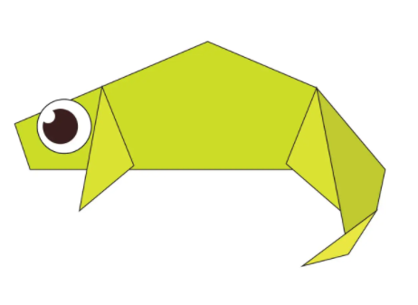

Origami Designs
About me
Follow Us
How to make a origami camel

Interesting facts about camels
- Camels ears are furry
- Camels can move easily on sand because of their specially designed feet
- when they find water they drink as much as they can
How to make a origami chamelion

Interesting facts about chamelions
- Chamelions are reptiles that are a part of the iguana suborder
- Chamelions skin colour is a important part of communication between them
- Chamelions can change their skin colour depending on their background to hide from predators